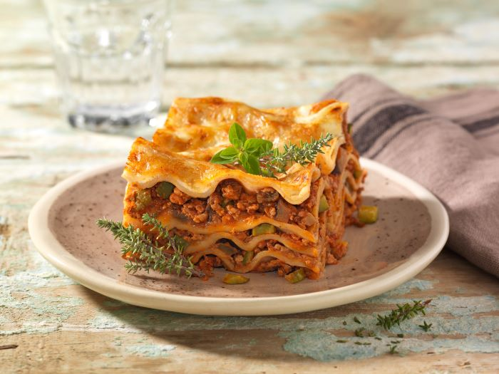

Beschreibung
Das ist ein Rezept für eine sehr leckere Lasagne für mehrere Personen
Nachstehend sind sowohl die Zutaten als auch die Zubereitung beschrieben
Zutaten
- 0,5 Zwiebel
- 1 Knoblauchzehe
- 1 Zuchini
- 0,5 Aubergine
- 1 EL Rapsöl
- 100g Rinderhackfleich
- 1 EL Tomatenmark
- 400g stückige Tomaten
- 8 Vollkorn-Lasagneplatten
- 50g Saure Sahne 10% Fett
- 50g geriebener Mozzarella (20% Fett i. Tr.)
- Salz
- Pfeffer
- Kräuter der Provence
Zubereitung
- Backofen auf 200 Grad (Umluft 180 Grad) vorheizen.
Zwiebel und Knoblauch schälen und hacken.
Zucchini und Aubergine putzen, waschen und in kleine Würfel schneiden.
- Öl in einer Pfanne erhitzen, darin Zwiebel und Knoblauch 3 Minuten bei mittlerer
Hitze andünsten. Dann Zucchini- und Auberginenwürfel zugeben, 5 Minuten bei
mittlerer Hitze anbraten. Anschließend Hackfleisch und Tomatenmark zugeben und
weiter 5 Minuten braten. Dann stückige Tomaten zugeben und 5 Minuten köcheln lassen.
Sauce mit Salz, Pfeffer sowie Kräutern abschmecken.
-
n eine Auflaufform eine dünne Schicht Gemüse-Hack-Mischung füllen und die Hälfte der
Lasagneplatten darauf geben. Dann immer wieder eine Schicht Gemüse-Hackfleisch-Mischung
und Nudelblätter einfüllen. Die oberste Schicht mit saurer Sahne bestreichen und
mit Mozzarella betreuen. Lasagne im vorgeheizten Backofen etwa 30–40 Minuten backen.